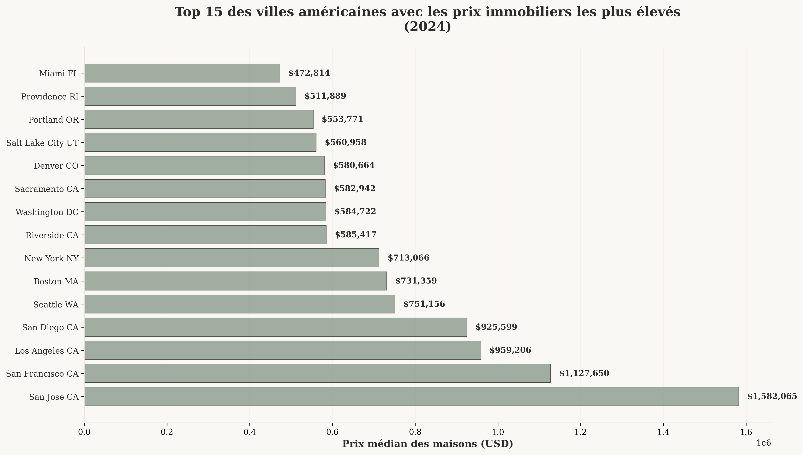
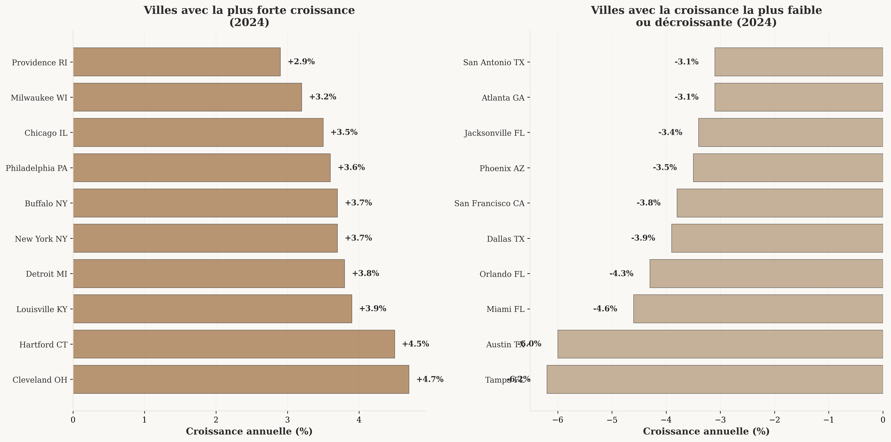
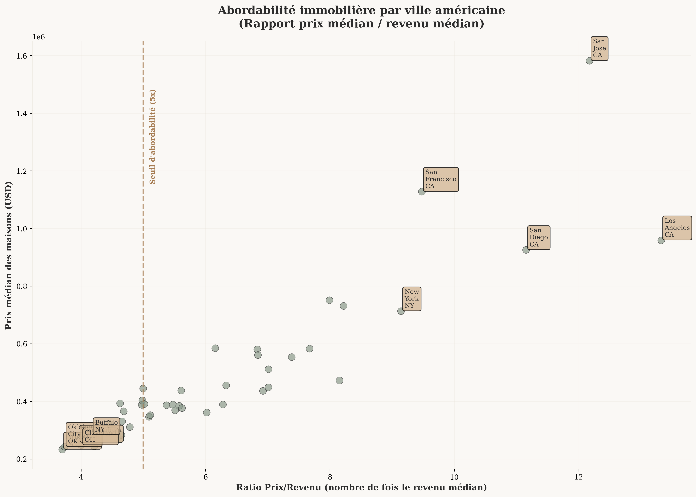

Résumé Exécutif
Cette analyse approfondie du marché immobilier américain révèle des disparités significatives entre les grandes villes, avec des marchés en déclin dans le Texas et la Floride, tandis que le Midwest et le Nord-Est connaissent une croissance robuste.
Prix Médian National
$367,965
Stable avec une croissance de +0.2% en 2024
Ville la Plus Chère
San Jose, CA
$1,582,065 (-1.6% de croissance)
Ville la Moins Chère
Pittsburgh, PA
$232,771 (+1.8% de croissance)
Ratio Prix/Revenu Moyen
6.0x
Indicateur d'abordabilité générale
Statistiques des Prix Immobiliers
Villes les Plus Chères
- San Jose, CA: $1,582,065 (-1.6%)
- San Francisco, CA: $1,127,650 (-3.8%)
- Los Angeles, CA: $959,206 (-0.8%)
- San Diego, CA: $925,599 (-2.6%)
- Seattle, WA: $751,156 (-0.8%)
Villes les Plus Abordables
- Pittsburgh, PA: $232,771 (+1.8%)
- Oklahoma City, OK: $242,586 (+1.0%)
- Memphis, TN: $244,072 (-0.7%)
- Cleveland, OH: $248,038 (+4.7%)
- New Orleans, LA: $256,244 (-1.0%)
Top 15 des Villes avec les Prix les Plus Élevés

Observation clé: Les villes de la côte Ouest dominent le classement des prix élevés, avec une concentration particulière en Californie. Cependant, la plupart de ces marchés coûteux connaissent une croissance négative ou stagnante, suggérant un possible ajustement du marché.
Tendances de Croissance des Prix
Croissance la Plus Forte
- Cleveland, OH: +4.7% ($248,038)
- Hartford, CT: +4.5% ($393,092)
- Louisville, KY: +3.9% ($271,943)
- Detroit, MI: +3.8% ($268,642)
- New York, NY: +3.7% ($713,066)
Déclin le Plus Marqué
- Tampa, FL: -6.2% ($361,115)
- Austin, TX: -6.0% ($437,456)
- Miami, FL: -4.6% ($472,814)
- Orlando, FL: -4.3% ($389,304)
- Dallas, TX: -3.9% ($369,096)
Analyse des Tendances de Croissance par Ville

Analyse: Un schéma géographique clair émerge - les marchés du Midwest (Cleveland, Detroit, Chicago) et du Nord-Est (Hartford, New York) montrent une croissance positive, tandis que le Texas et la Floride, anciens moteurs de croissance, connaissent maintenant des corrections significatives.
Abordabilité Immobilière
Villes les Moins Abordables
- Los Angeles, CA: 13.3x le revenu médian
- San Jose, CA: 12.2x le revenu médian
- San Diego, CA: 11.2x le revenu médian
- San Francisco, CA: 9.5x le revenu médian
- New York, NY: 9.1x le revenu médian
Villes les Plus Abordables
- Pittsburgh, PA: 3.7x le revenu médian
- Oklahoma City, OK: 3.7x le revenu médian
- Birmingham, AL: 4.0x le revenu médian
- Cleveland, OH: 4.0x le revenu médian
- Buffalo, NY: 4.2x le revenu médian
Analyse de l'Abordabilité par Ville

Interprétation: La ligne de référence à 5x le revenu médian représente généralement le seuil d'abordabilité. Seules 8 villes sur 49 dépassent ce seuil, concentrées principalement sur les côtes Est et Ouest, créant un fossé d'abordabilité géographique marqué.
Analyse Interactive Complète
Recommandations et Perspectives
Pour les Investisseurs
- Opportunités de valeur: Marchés du Midwest (Cleveland, Detroit) avec croissance positive et prix abordables
- Éviter: Marchés en déclin du Texas et de la Floride à court terme
- Surveiller: Villes du Nord-Est avec croissance stable et demande durable
Pour les Acheteurs Résidentiels
- Abordabilité maximale: Pittsburgh, Oklahoma City, Birmingham
- Équilibre prix/croissance: Villes du Midwest avec stabilité économique
- Attention: Côtes Ouest et Est - ratios prix/revenu excessifs
Tendances Futures
- Normalisation: Correction attendue dans les marchés surévalués
- Migration: Flux vers les marchés abordables du Midwest
- Stabilité: Marchés établis du Nord-Est résistants aux cycles
Risques et Limites
- Données limitées: Analyse basée sur 50 grandes villes seulement
- Facteurs externes: Taux d'intérêt, inflation non intégrés
- Dynamiques locales: Variations intra-urbaines non capturées
Méthodologie et Sources de Données
Sources principales:
- Zillow Home Value Index (ZHVI) - Prix médians par métropole
- Redfin Housing Market Data - Tendances de croissance
- Données de revenus médians - Estimations basées sur les données census américaines
Méthodes d'analyse:
- Analyse descriptive des prix médians (ZHVI 2024)
- Calcul du taux de croissance annuel (YoY 2024)
- Ratio d'abordabilité: Prix médian / Revenu médian
- Classification par percentiles pour identification des extrêmes
Période d'analyse: Données 2024 avec comparaisons annuelles
Échantillon: 50 plus grandes métropoles américaines
Télécharger les Données
Accédez aux données brutes et aux résultats d'analyse pour vos propres recherches
Données Immobilières (CSV) Résultats d'Analyse (JSON)